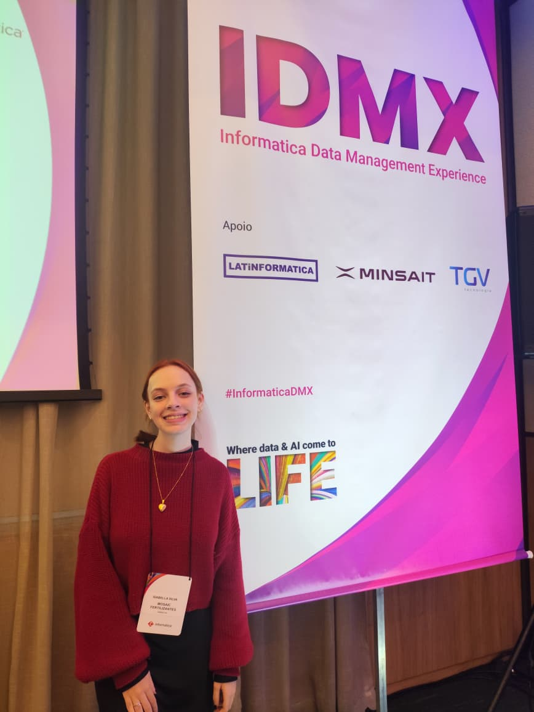
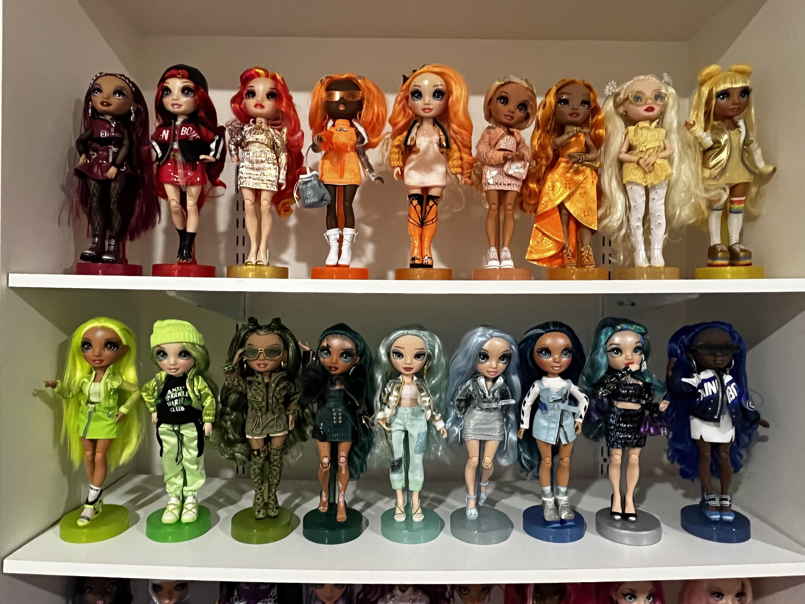

Previsão de consumo de água
Projeto desenvolvido para a disciplina de Estruturas lineares, com o objetivo de criar uma pagina que preveja o consumo de água de com base na temperatura do dia.
Ver projeto →Olá, eu sou a
Estudante de Sistemas de Informação & desenvolvedora em formação
Sou estudante do último ano de Sistemas de Informação da UMC, atuo como estagiária de Governança de Dados. Ao longo da minha graduação venho me aprofundando em áreas de automação de processos, SQL, Java, Python e desenvolvimento web, sempre buscando novos desafios e oportunidades para crescer profissionalmente.

Alguns trabalhos que desenvolvi e estão disponíveis no meu GitHub.
Projeto desenvolvido para a disciplina de Estruturas lineares, com o objetivo de criar uma pagina que preveja o consumo de água de com base na temperatura do dia.
Ver projeto →
Projeto desenvolvido para a disciplina de Paradigma da Orientação a objeto, com o objetivo de criar um sistema web para gerenciamento de uma coleção de bonecas.
Ver projeto →Projeto desenvolvido para a disciplina de Programação para Internet, com o objetivo de explorar a plataforma Figma para criação de interfaces.
Ver projeto→Vamos nos conectar:
 LinkedIn
LinkedIn
 GitHub
GitHub